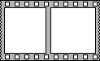
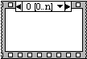

Flat Sequence Structure
Owning Palette: Structures
Requires: Base Development System
Consists of one or more subdiagrams, or frames, that execute sequentially. Use the Flat Sequence structure to ensure that a subdiagram executes before or after another subdiagram.
Data flow for the Flat Sequence structure differs from data flow for other structures. Frames in a Flat Sequence structure execute from left to right and when all data values wired to a frame are available. The data leaves each frame as the frame finishes executing. This means the input of one frame can depend on the output of another frame.

 Add to the block diagram Add to the block diagram |
 Find on the palette Find on the palette |
Unlike in the Stacked Sequence structure, you do not need to use sequence locals to pass data from frame to frame in the Flat Sequence structure. Since the Flat Sequence structure displays each frame on the block diagram, you can wire from frame to frame without using sequence locals and without hiding code.
When you add or delete frames in a Flat Sequence structure, the structure resizes automatically.
You cannot drag tunnels across the frames of a Flat Sequence structure.
To avoid overusing Flat Sequence structures, attempt to control the data flow of your VI by establishing data dependency or using flow-through parameters.
(Real-Time, Windows) To convert a Flat Sequence structure to a Timed Sequence structure, right-click the Flat Sequence structure and select Replace with Timed Sequence from the shortcut menu.
Stacked Sequence Structure
A Stacked Sequence structure consists of one or more subdiagrams, or frames, that execute sequentially. Right-click the structure border to add and delete frames or to create sequence locals to pass data between frames. Use the Stacked Sequence structure to ensure a subdiagram executes before or after another subdiagram.
To create a Stacked Sequence structure, place a Flat Sequence structure on the block diagram, right-click the Flat Sequence structure, and select Replace with Stacked Sequence.
To scroll through the available subdiagrams, click the decrement and increment arrows in the selector label. You can add, duplicate, rearrange, or delete the subdiagrams. You can use a sequence local terminal to pass data from one frame to any subsequent frame.
Use the Stacked Sequence structure if you want to conserve space on the block diagram. Use the Flat Sequence structure to avoid using sequence locals and to better document the block diagram. To convert the Stacked Sequence structure to a Flat Sequence structure, right-click the Stacked Sequence structure and select Replace»Replace with Flat Sequence from the shortcut menu.
To convert the Stacked Sequence structure to a Case structure, right-click the Stacked Sequence structure and select Replace»Replace with Case Structure from the shortcut menu.
The Stacked Sequence structure does not start to execute until all data wired to the structure arrive. The data wired from each frame leave only when all the frames complete execution.
To avoid overusing Stacked Sequence structures, attempt to control the data flow of the VI by establishing data dependency or using flow-through parameters.